iPhone SE (3rd generation) Simulator, iOS 26.2, driven with AXe against the installed Machine (lf 0.16.0+0fa6a4e20) over its mobile address, 2026-11-22. Writes went only to Tasks in a disposable repository, since deleted.
Fresh install: pairing
Did
Launched with no saved Machine, tapped Enter address, typed “not an address”, then the real endpoint, then Connect Machine.
Saw
A wrong address says “Enter the Tailscale address shown in Desktop’s Mobile settings.” and stays put. The real one verifies and opens the list.
Fixed
The address field was the system rounded field, 34 pt tall. It now has the New Task field’s shape at 44 pt.
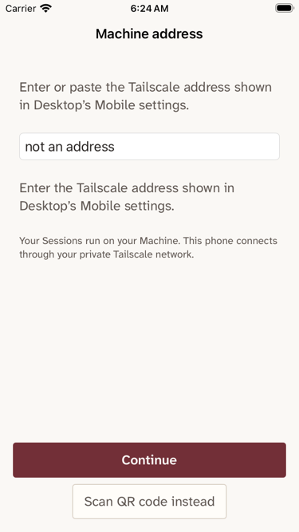
wrong address
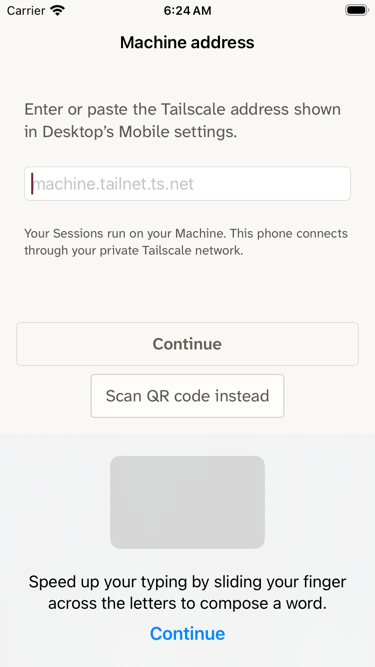
before: 34 pt field
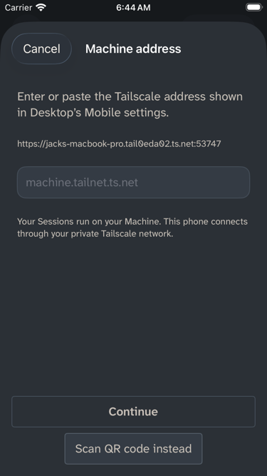
after, dark
Task list
Did
Read the Started list in light and dark, searched for something absent, switched to Backlog and Done.
Saw
Rows are the shared row: whole title, ID, status word. Done rows say Done; real Tasks say Idle and Available.
Fixed
Row titles started 4 pt right of their section headers; they line up now. Every Backlog row said “Unavailable” because the Machine lists “No primary Session is recorded” on any Task without a conversation; the lifecycle word wins now (Unstarted). Search no longer capitalizes the term.
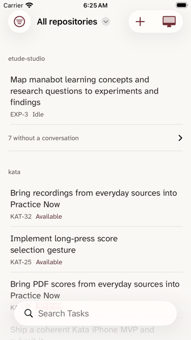
before: rows 4 pt off
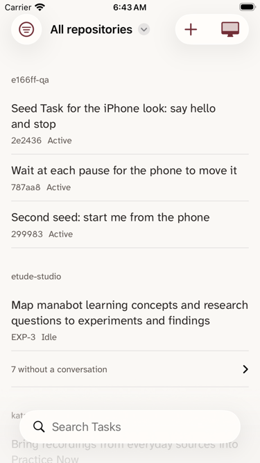
after
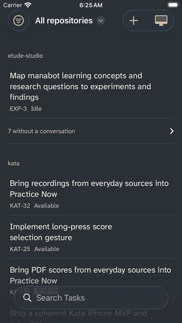
dark
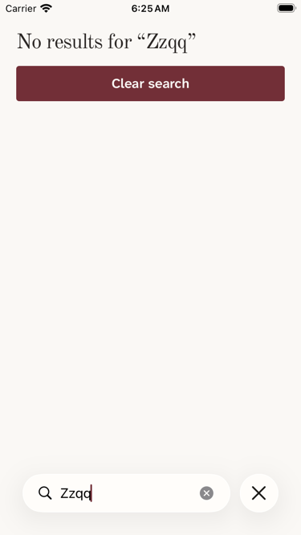
no match
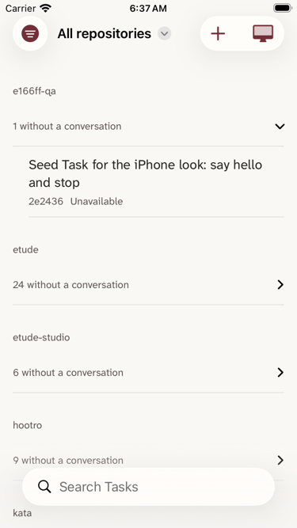
before: Unavailable
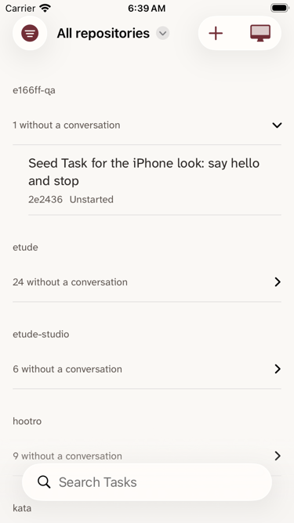
after: Unstarted
New Task
Did
Tapped +, typed a request, opened the repository picker, searched it, picked a disposable repository, Create & start.
Saw
“What do you want?” in serif, the field in lede, one accent button. The Task was created and its screen opened.
Fixed
The picker’s empty state drew over the Machine’s name; the header now leaves with the rows.
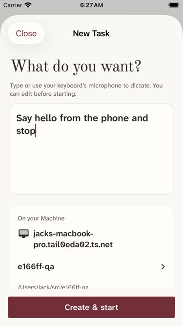
ready
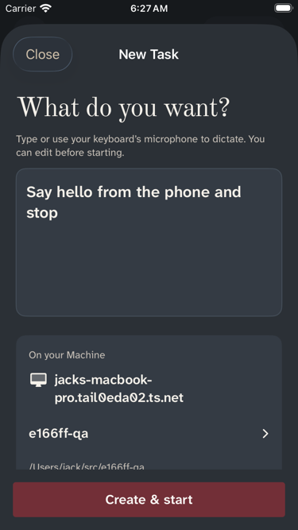
dark
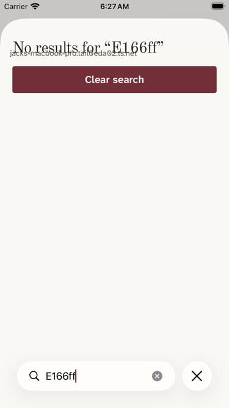
before: overlap
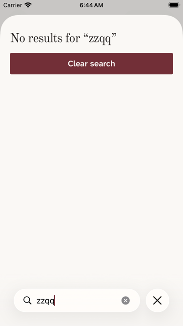
after
A Task’s conversation
Did
Opened the new Task, sent a reply, opened the key row, backgrounded the app and came back, attached a second view from the Mac.
Saw
After the repair: the terminal draws in the theme, the reply round-trips (“pong”), the draft survives backgrounding, and a second view shows “This Session is open on another device.” until it leaves.
Fixed
Every conversation ended in “Disconnected: Unsupported Session frame”. The phone’s decoder rejected the position, aside and close frames the server has sent since 2026-11-12; this is broken on main too. It reads all three now, with a test.
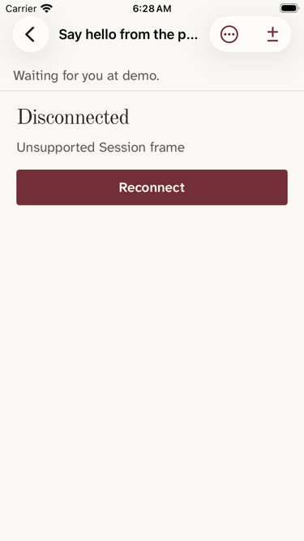
before: first screen after Create & start
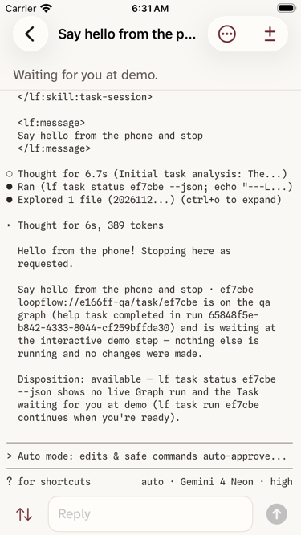
after
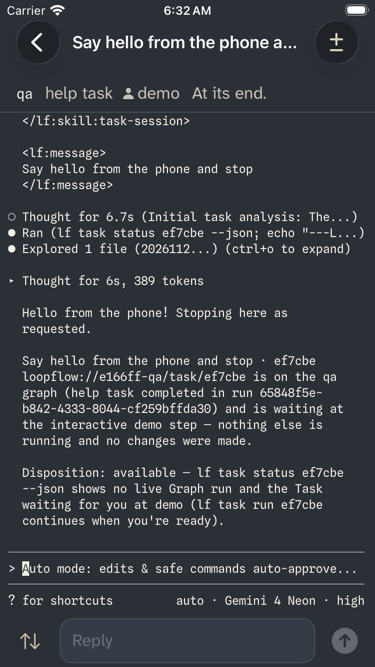
dark
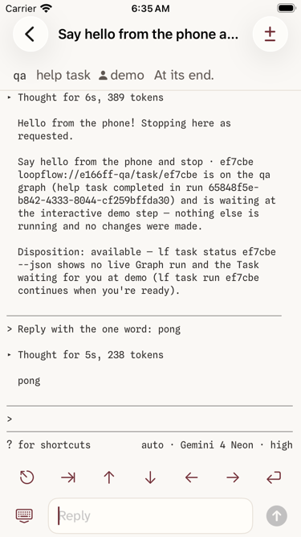
reply and key row
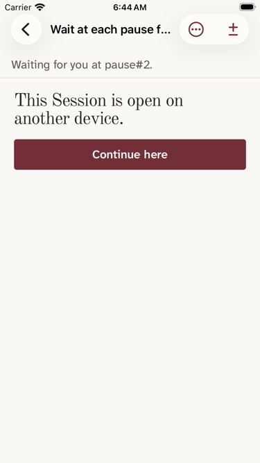
second view
Workflow sentence and Task actions
Did
On Tasks waiting at a step: Run, Auto-Ship, Stop Auto-Ship. On an unstarted Task from Backlog: Start.
Saw
The sentence matched lf task status each time (“Waiting for you at pause#2.”) and wraps to two lines when long. Each action posts a line like “787aa8 Auto-Ship requested” and the sentence changes within a second or two.
Fixed
After Start the Task left Backlog, the list had no row for it and Task actions vanished while the sentence said “Waiting for you”. Actions now read the Task’s own reading. The unstarted Task’s screen said “Couldn’t load: Task task_… is not checked out on this Machine”; it says “No changes yet”.
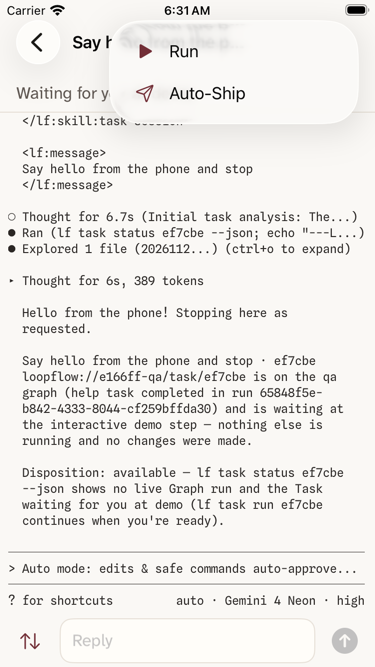
Run and Auto-Ship
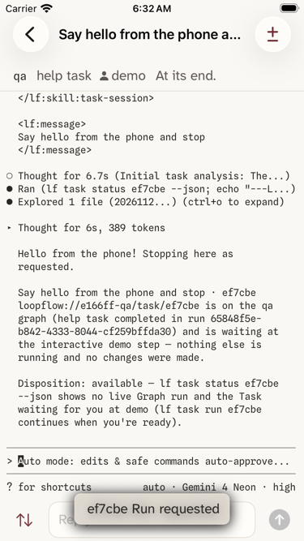
Run requested
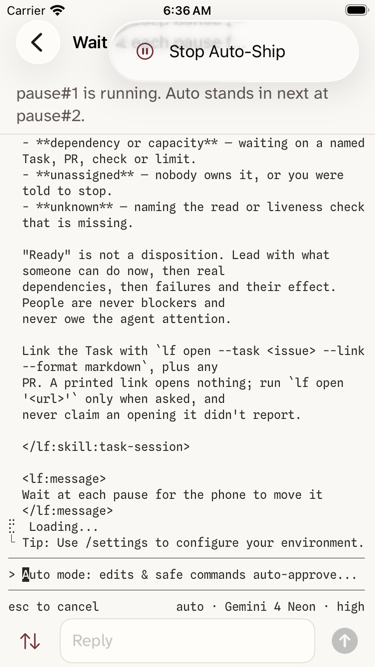
auto on, wrapped
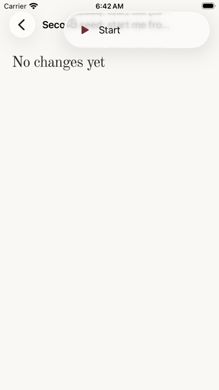
unstarted: Start
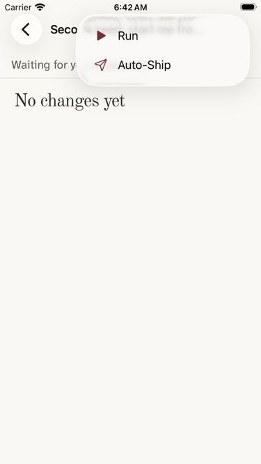
after Start
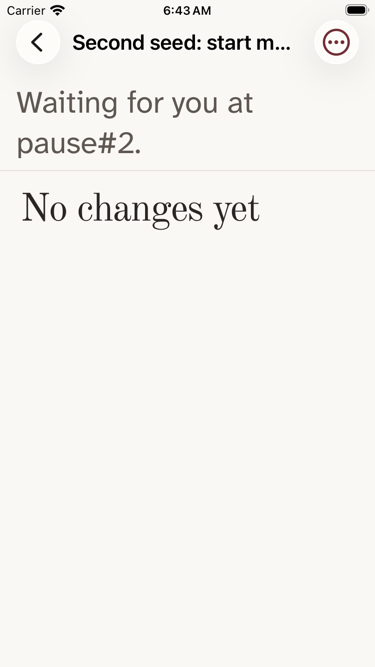
accessibility-large
Changes, diff, file
Did
Changed three files in the Task’s checkout, opened Changes, a diff, the whole file and a binary file.
Saw
Files list with their state; the binary file says “Binary file”.
Fixed
Short diffs and files sat in the middle of the sheet with a stray wrap. They start top left and tints run the full width.
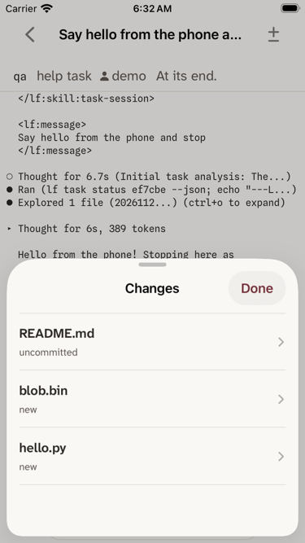
Changes
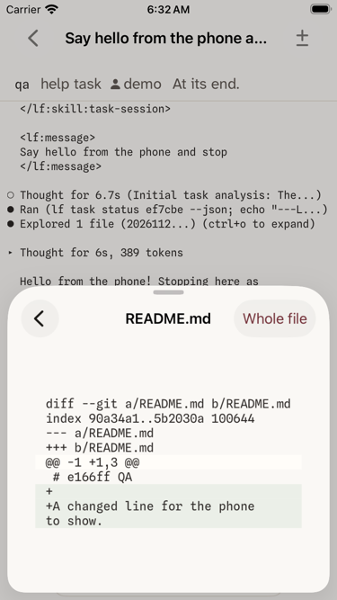
before
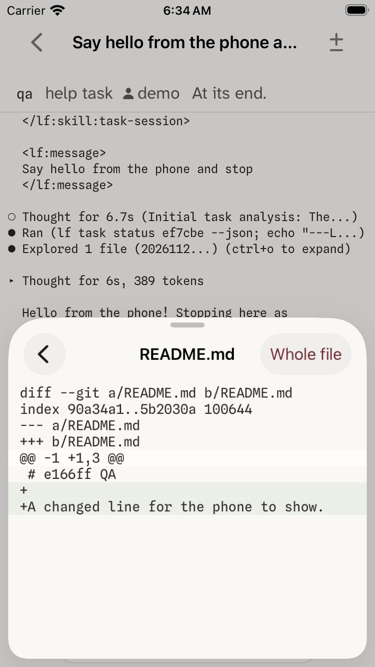
after
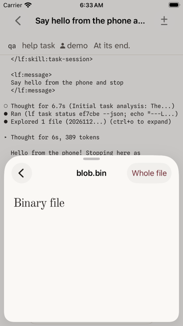
binary
Complete
Did
Swiped a row left and tapped Complete.
Saw
The row left at once and lf task status reads done.
Where it stands
Works now
Pairing, the list and its filters and search, New Task through Create & start, the conversation with reply and keys, the sentence, Start, Run, Auto-Ship, Stop Auto-Ship, Changes, diff, file, Complete, background and return, a second view, light, dark and large text. 45 phone tests and 51 Mac-side tests pass.
Not reached
Landscape and iPad, where the Graph’s steps stand before the sentence: AXe rotates only the Duo and physical devices. A short Graph did show its steps in portrait.
The QR scanner: a Simulator has no camera.
A network lost mid-Session: the carrier is the Machine’s one Tailscale endpoint.
A physical phone, the touch keyboard and dictation.
Still wrong, worst first
A Task started from its own screen keeps showing Changes; its conversation opens only after going back to the list.
The Notice covers the Reply field for the seconds it shows.
In dark, “Available” is nearly the secondary ink, so the tone barely reads. The value is the shared palette’s.
The disposable repository left five Tasks in the Machine’s store (two Done, three abandoned).